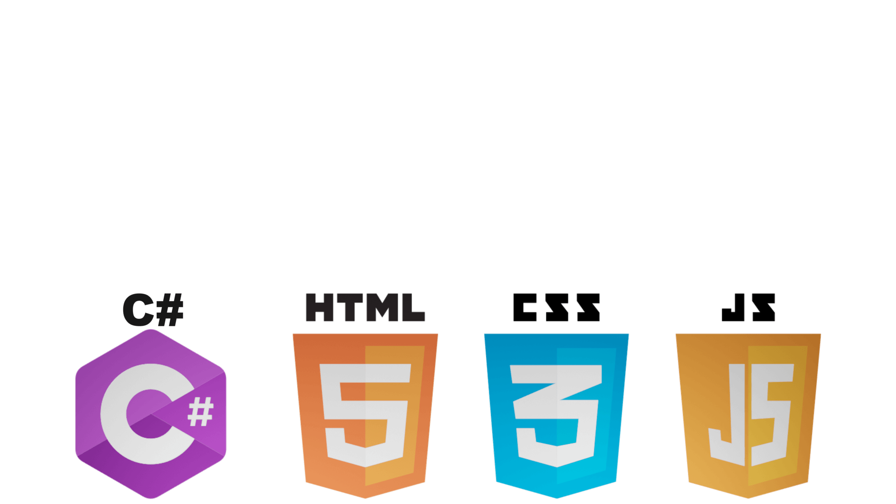

Snippet of my code:
scene = new THREE.Scene();
const fov = 35;
const aspect = container.clientWidth / container.clientHeight;
const near = 0.1;
const far = 500;
camera = new THREE.PerspectiveCamera(fov, aspect, near, far);
camera.position.set(0, 3, 30);
const ambient = new THREE.AmbientLight(0x404040, 4);
scene.add(ambient);
const light = new THREE.DirectionalLight(0xffffff,4);
light.position.set(10,10,10);
scene.add(light);
renderer = new THREE.WebGLRenderer ({antialias: true, alpha: true});
renderer.setSize(container.clientWidth, container.clientHeight);
renderer.setPixelRatio(window.devicePixelRatio);
container.appendChild(renderer.domElement);
CODE 
Doświadczony deweloper front-end, który skupia się na tworzeniu eleganckiego i wydajnego kodu. Posiadam umiejętności w zakresie Java, HTML, CSS i C#. Projektowałem strony internetowe oraz gry wideo. Oprócz moich umiejętności technicznych, posiadam również silne podstawy w projektowaniu UX i UI, co pozwala mi tworzyć projekty, które są zarówno wizualnie atrakcyjne, jak i przyjazne dla użytkownika. Moja zdolność do kreatywnego myślenia i szybkiego dostosowywania się do zmieniających się wymagań czyni mnie idealnym kandydatem do dowolnego projektu związanego z tworzeniem stron internetowych. Ogólnie rzecz biorąc, jestem zmotywowanym i pasjonującym deweloperem webowym, który dumnie dostarcza wyjątkowe rezultaty, przekraczając oczekiwania. Z niecierpliwością czekam na możliwość wniesienia moich umiejętności i wiedzy do Państwa kolejnego projektu.
Passionate Front End Developer who focuses on writing clean, elegant and efficient code. Skilled in Java, HTML, CSS, C#. Creates seamless UX and UI with creative but functional designs. Designed websites and video games. Beyond my technical skills, I also have a strong background in UX and UI design, which allows me to create designs that are both visually appealing and user-friendly. My ability to think creatively and adapt quickly to changing requirements makes me an ideal candidate for any web development project. Overall, I am a driven and passionate web developer who prides myself on delivering outstanding results that exceed expectations. I look forward to the opportunity to bring my skills and expertise to your next project.
733743446
szymonglowacki321@gmail.com